Between 2024 and 2025, I had the opportunity to work on a mural project with the UC Berkeley Campus Murals Committee. The mural, titled "Common Threads," is located in the Social Sciences Breezeway and celebrates the diversity and interconnectedness of the UC Berkeley community, guided under the theme of "celebrating our differences through art." The design features a quilt that affirms the rich diversity of experience, culture, and history at UC Berkeley.
Cultures around the world have long expressed identity through traditional textiles. This mural stitches together those diverse fibers of history and heritage, connected by gold thread on a blue backing, symbolizing community across time and space.
It was an incredible experience collaborating with other members of the campus community to bring this vision to life. Support for this mural was made possible by the Campus Murals Committee, the Division of Equity & Inclusion, Division of Administration, Division of Student Affairs, and an allocation from the Big C Fund.
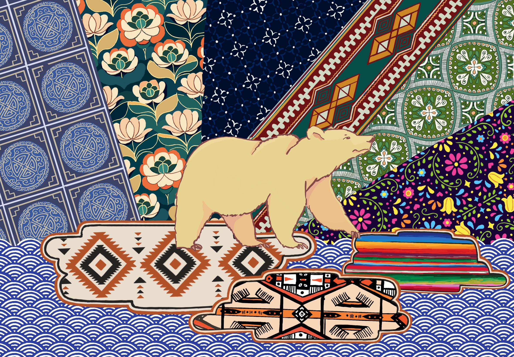
My submission for the campus wide contest featured ten textile patterns from across the world, including Indigenous tribes, serving as the environment through which the Berkeley bear walks. I used student body demographics to select textile origins.
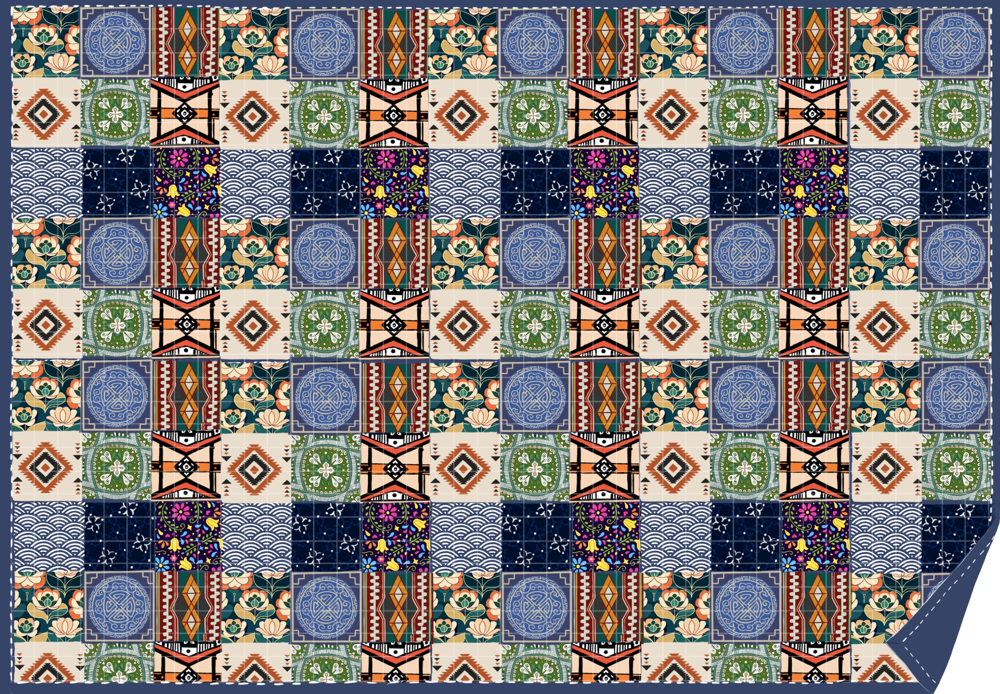
To maximize the number of cultures I could represent, I created a quilt with 154 squares. I added stitching and a folded edge, making it more realistic.
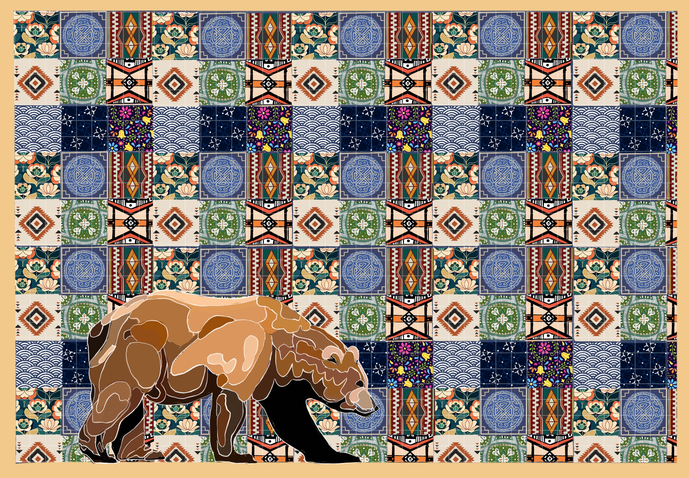
The committee wished to see an obvious Berkeley element, and found the original bear too cartoonish. I experimented with a more realistic brown bear, Berkeley's mascot.
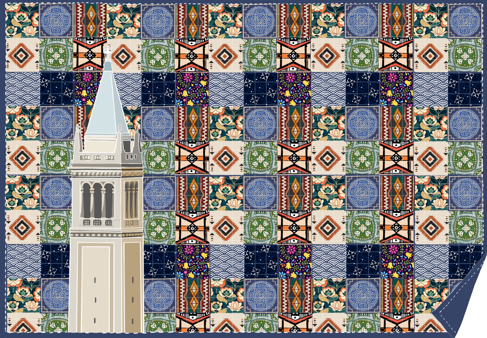
The bear did not obviously represent UC Berkeley, so I experimented with campus landmarks. This one, of the Campanile, represents the iconic bell tower of the university, but appeared a little awkward.
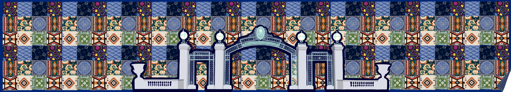
At this point in the design process, the dimensions of the mural were confirmed. Instead of the wall I had been envisioning, it was a 70 ft by 14 ft breezeway.
Instead of the Campanile, we considered Sather Gate, but it was too intricate and messy over the textile patterns.
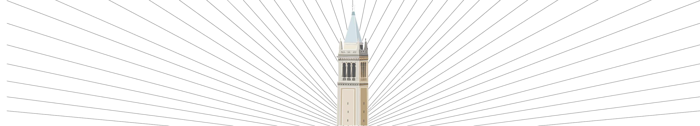
We went back to the Campanile, since it looked more cohesive on the longer wall. Here is a mock-up of how the textiles would be arranged. The thin strips were not ideal for showcasing the patterns.
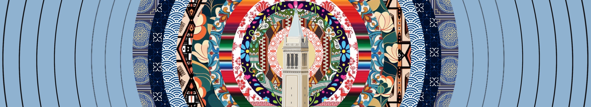
Concentric rings felt more welcoming, but presented the same problem with visibility of patterns.
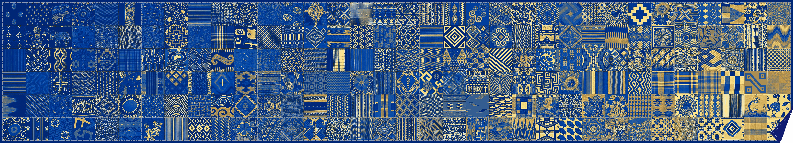
One final option was to incorporate the blue and gold colors of the university in a gradient. However, this approach detracted from the cultural textiles.
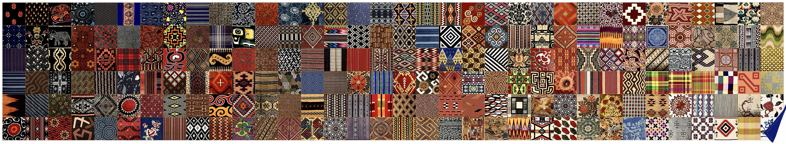
We ultimately decided to forgo any overlayed elements or gradients to
prioritize visibility.
Click here to view a video of the end result.
My very first mural project, at John F. Kennedy Middle School in Cupertino, CA, centers on a typographic design of a famous quote by Kennedy. "The greater our knowledge increases, the more our ignorance unfolds," is a reminder that learning is a lifelong process, and that the more we discover, the more we realize how much there is still to learn. The mural was painted in 2017 with the help of my friends, and it was an incredible experience to see the design come off a sheet of printer paper and onto the wall.
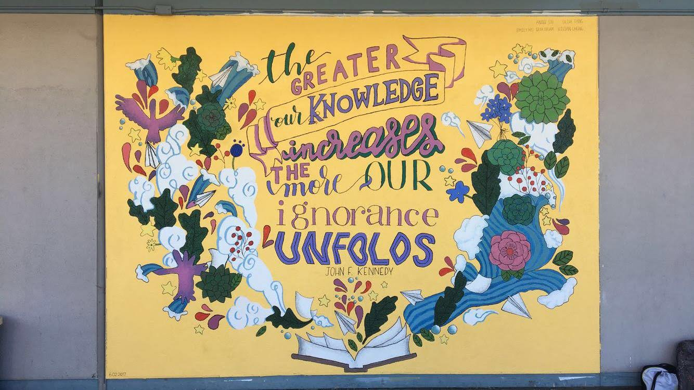
Gouache is a happy medium with all the mysteries of watercolor and the reliability of acrylic paint. I drift towards landscapes and quiet scenes inspired by places I've traveled or imagined worlds from Studio Ghibli films. Painting is a way for me to notice color, light, and atmosphere. In noticing, I practice patience and presence, and I love the way I become intimately familiar with my subject matter after spending hours lost in the individual brushstrokes.
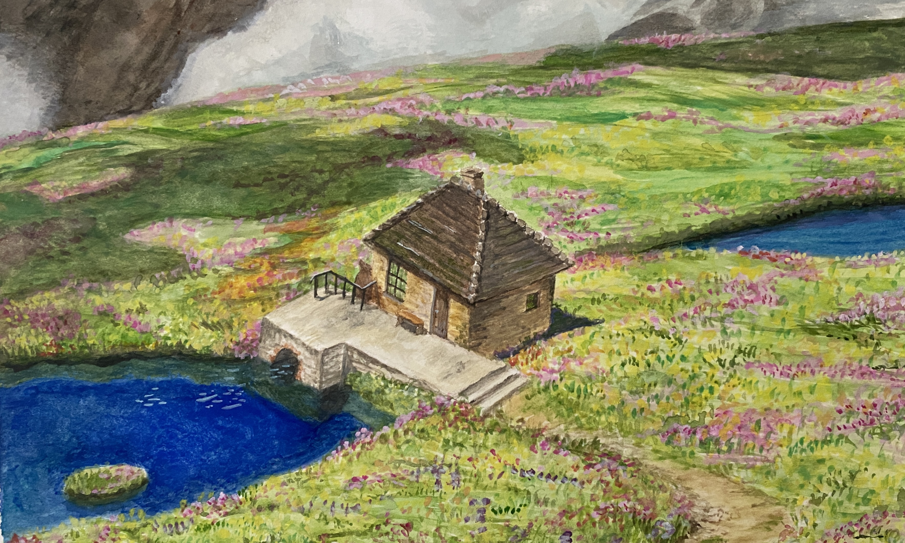
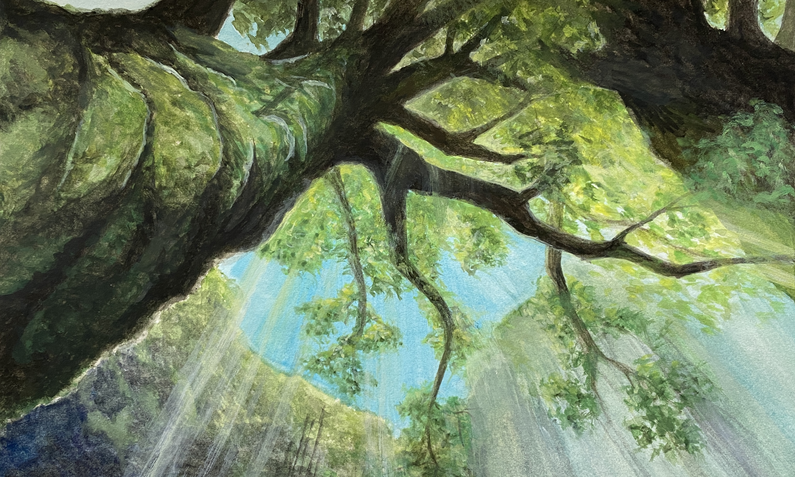
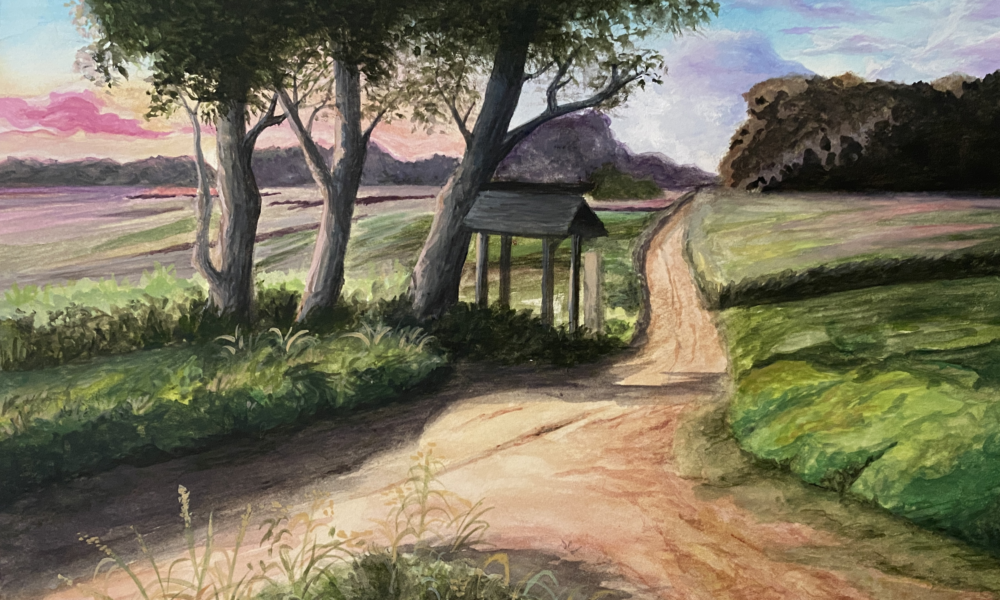
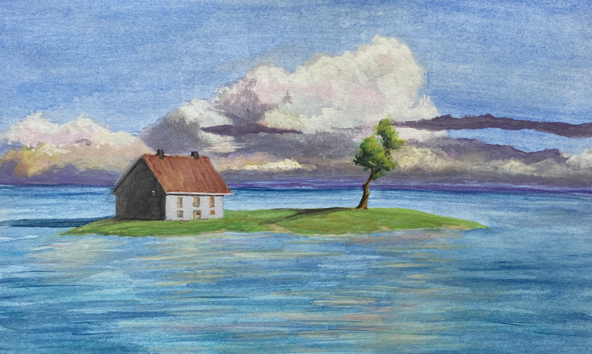
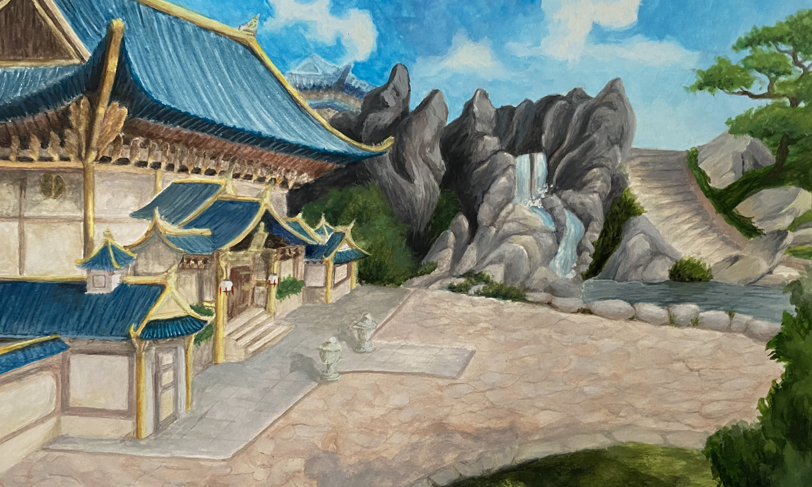
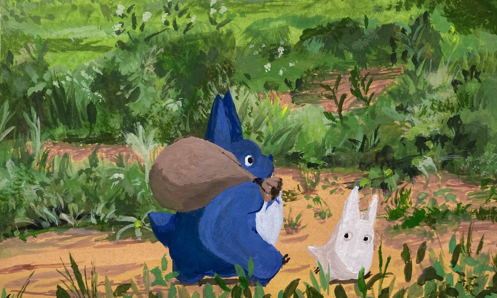